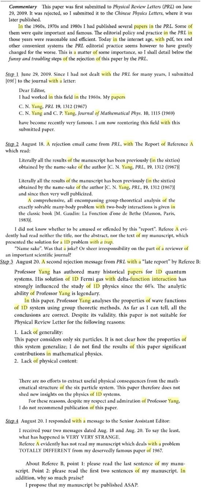

2017-09-23 19:55:00
两天前，《观察者网》的科技编辑写电子信函问我对《光明网》上批评杨振寧被PRL退稿一事的意见。我原本又以为只是私下通讯，所以写得很精简，纯粹就事论事。他们刊出后，我原想再增润一些评论，但是后来仔细想一想，觉得这些评论主观气息比较浓厚，离题也比较远，所以还是在自己的部落格可以啰啰嗦嗦讲清楚较为合适。《观察者网》上的文章可以参见http://www.guancha.cn/wangmengyuan/2017_09_21_428018_s.shtml；为大家参考方便，也同时录于正文之后。
首先，我对《光明网》写文章的作风很不同意。他的事实根据就只是上周朱邦芬发表的《回归后杨振寧先生所做的五项贡献》一文中的几句话，后者本身明显只是引用杨先生自己书中的回忆，而这些回忆讲的那篇论文也同样在Public Domain，百度一下自然就有了。要做任何评论，最最起码应该先仔细读一读杨先生那本书里的记载；合理的则是找出那篇论文，然后由专业人员做客观判断，结果《光明网》什么都不做，然后就写了一篇负面的怀疑和质询，还不公开直接地说，绕着弯子只提出模糊的疑问，让有识之士不方便反驳。这真的是既懒、又不诚实、还极端不负责任的恶劣态度。我以前已经一再解释过，散布谣言比澄清谣言要容易好几万倍，媒体界如果以造谣为能事，习以为常，如臺湾那样，那么就是愚化民众的凶手，最后只能使国家社会沉沦。
经过分析之后，杨先生那篇论文被《Physical Review Letters》拒稿显然是因为题材不够热门之故，和研究水平高低没有关系。我看了看读者的评论，注意到大多数的专业研究人员都对学术界追求热门流行的现象很熟悉，但是很少有人质疑这个现象本身的好坏对错。上次我评论张首晟一事，批评他是专门”追救护车“的，居然还有人说本来做学术就应该这样，我对追救护车的负面态度是好高骛远，误导学子。其实当时的话题是张首晟把自己吹嘘成诺贝尔奖热门，而诺贝尔奖最重要的评选标准之一就是创新性，绝对不应该是追救护车的研究；进物理这个领域，则当然不应该是为了想得诺贝尔奖。那么把诺贝尔奖的标准和入行的理由扯在一起，纯粹只是运用了转变话题、自己树靶自己打的狡辩术（英文叫做Straw Man Fallacy）。那人是中国高能物理界的教授，对我揭露他们欺世盗名的骗局心有不甘，所以不顾是非搞出这种有意的中伤是可以理解的，比起美国超弦论者对Peter Woit的人身攻击，也不算是太恶毒，但是其他理工领域的也跟着起哄，则不但是受了骗，而且也失去了一个对自己行业反省的机会。
专业期刊只登热门的题目，研究者为了出论文，也就只能追救护车，这不止对行业自身不是好事，对人类社会更有长期的负面影响。不追救护车，并不意味着孤注一掷、只想打全垒打，反而是可以研究千千万万冷门的题材，而引领出看似微小但仍然可能重要的创新。所有的人才都专注到少数几个热门的项目上，不但必然有重复浪费，而且一个行业自身不可能有对人类世界的全局观，靠Herd Mentality（兽群心态）而自我定义的重要题目，也就会有偏差，挂一漏万，何况尖端的研究方向，原本就不可能事先准确预期有多大的发展。现代学界的终身教授制，就是针对这个问题而建立的：虽然明明知道必然会有懒人、庸人钻漏洞，像海鞘一样安定下来就先消化掉自己的大脑，但是两害相权之下，不让教授能安心钻研冷门的题材为害更大。中国学术界的管理者应该好好想清楚这个道理，然后对目前两害兼有的半吊子制度做出适当的改革。
我不但与杨先生从未谋面，原本连他的论文都没有读过。这是因为他比我早了两代，所创作的理论又极为重要，早已被后人详细整理阐述，我也就无须去读原版。但是我在臺湾清华求学时，就聼刚从美国回归的师长提起，说杨先生的论文，文字极为简练、直接、易读，然而逻辑严谨、环环相扣、无懈可击，是完美的专业写作风格。我后来自己到美国，花了十年以上练习写作，一直都把这个评语记在心里，作为努力的目标。如果我的读者也觉得我的文章，够得上同样的形容，那么那些努力就不算白费了。
===================================================
近日，清华大学朱邦芬院士的《回归后杨振宁先生所做的五项贡献》一文引起热议，文中提到杨振宁回归后投稿国际着名物理学期刊PRL遭拒，从此将科研文章主要投给中国物理刊物《中国物理快报》的往事。此后，光明网发表评论员文章《杨振宁投稿权威期刊遭拒一点不奇怪》，认为“对于一个获得过物理学诺贝尔奖的物理学家，一本国际着名的物理学期刊怕是不敢怠慢之”，这样的期刊拥有“‘冒犯’业内大咖的底气和勇气。”
相比PRL的“勇气”，光明网评论员又引用朱院士文章的例子，指出发表杨振宁这篇论文的《中国物理快报》，曾被杨振宁批评学术诚信问题。
杨振宁投稿国际期刊遭拒，却在中国期刊顺利发表，真的是因为国外审稿比中国严？观察者网就此采访了哈佛大学物理学博士王孟源，他提出了不同意见。
王孟源博士答观察者网：
杨先生的这篇论文，讲的是Yang-Baxter方程式。它并不在高能物理的范畴内，而属于数学物理，所以我对这个题目不熟。
不过杨先生发明这个方程式是在1967年，当时解释强作用力的QCD（基于杨先生的Yang-Mills方程式）还没有被确立，高能物理针对强作用力的流行理论是Scattering Matrix。虽然后来Scattering Matrix用在强作用力上被证明是死路一条而完全放弃，但是杨先生所写下的Yang-Baxter方程式（我并不是说Y-B方程式是为强作用力而发明的；杨先生把它应用在一个一维的量子力学Toy Model上，但是它对所有的Scattering Matrix都适用）在其他的数学领域也有应用，所以流传至今。
虽然我不能确定Physical Review Letters评审的真正动机是什么，不过从信件来看，第一个评审的确是假设2009年的C.N.Yang是一个名不见经传的中国人，只不过名字刚好和1960年代的作者相同，而且从语气来看，他并不知道1960年代的那个C.N.Yang写下了Yang-Mills方程式并且得过诺贝尔奖。他对杨先生新论文的题材也不熟，只不过去查了一本书（法文的，所以这人大概是法国人），然后就说杨不可能超出那本书的范围。我想这人无知、无礼，是无可争议的事实。
第二个评审没有这个问题，他显然知道杨先生是谁。从他的口气，他的专业也的确是数学物理。他所说的退稿的理由，是1）论文讨论的只是一个n=6的特例（“Lack of Generality”翻成“缺乏广泛兴趣”是错的，应该翻成“不能广泛适用”才对），2）没有物理应用；杨先生则显然不同意。
我对这个题目没有专业知识，所以杨先生的论文有多重要、是否有前例等等的问题，我是不能置评的。不过我找到了那篇论文，看了一遍，可以确定退稿的理由1是不成立的，因为杨先生论文的最后一句话就是：虽然我只用n=6来做讨论的实际例子，但是所得的结论对所有的n都成立。
至于理由2，杨先生的论文第一句话就说，最新的实验可能可以检验原本只是Toy Model的这个一维模型，不过到底是否真的如此，我不知道，因为这些实验属于低温物理。然而这个评审是做数学物理的，所以我觉得他也不可能知道。如果他特别为此去请教做低温物理的同僚，就应该要提起，但是他没提。
好，可以用逻辑确定的讲完了，这里我做些不太确定的猜测：
首先，这些期刊的评审对中国作者的论文，一般会有歧视；我指的是从中国发的论文，而不是在欧美研究机构任职的中国人的论文；这大概是第一个评审的心态。
其次，对上一代的研究者，他们也会歧视；尤其杨先生算是上、上、上一代的，自然更是会被另眼相看；这应该是第二个评审的心态。
不过，我个人猜想，这个事件背后最主要的原因，是物理界也讲流行，而过去40年，除了高能物理完全撞墙之外，其他领域的进展也越来越慢。
既然真正的突破越来越少，每个突破越来越难，而发表的论文却越来越多，那么集中在个别题目的论文数量自然成指数成长，绝大多数都是我说“追救护车的”。这一代的评审们从学生时代，就习惯如此，做到正教授、当了期刊评审之后，拿到别人的论文，还是简单一看是否属于正在流行的少数几个大题目之下，如果不是，基本就准备要丢到垃圾桶去了。
杨先生来自一个不同的时代，所以自然不能理解今日评审对冷门题目的轻率藐视。
希望你觉得我的分析合理。
杨振宁在书中附自己和《物理评论快报》的两轮邮件往来：

摘自《Selected Papers of Chen Ning Yang II： With Commentaries》，杨振宁，2013年。图源：科学网 湖南大学物理教授刘全慧。
光明网评论员：杨振宁投稿权威期刊遭拒一点不奇怪
今天（9月20日）有媒体报道说，近日清华大学物理系教授、《中国物理快报Chinese Physics Letters》主编朱邦芬在《回归后杨振宁先生所做的五项贡献》一文中披露说，8年前，杨振宁曾向其熟悉的国际期刊《物理评论快报Physical Review Letters》投稿，但却遭到了退稿。据说，杨振宁在2013年出版的自选文集（《Selected Papers of Chen Ning Yang II: With Commentaries》）中，也提及了这次令他感到“滑稽和烦恼（funny and troubling）”的被退稿一事。
上述报道转述杨振宁书中所讲称，2009年6月，时年87岁的杨振宁向《物理评论快报》投稿，论文由他一人完成。因为多年没有联系过《物理评论快报》，杨振宁在投稿时做了简单的说明，列出自己曾在1967年和1969年就1维δ函数作用发表过的文章。“现在，我带着这篇新论文重回这个领域。”杨振宁在给编辑的信中写道。
显然，作为国际物理学界的着名刊物，其编辑不识鼎鼎大名的杨振宁是不可能的。但是，即便如此，“一个多月后返回的一位同行评议者认为，新作的结论已经包含在‘同名者（即杨振宁）’在1967年所发表的论文中”。“两天后，另一位同行评议者的反馈传来。反馈的开头是对杨振宁过去工作的肯定，赞扬其分析能力是‘传奇般的’。对于新作，同行评议者表示，据他/她所看，结论都是正确的，但认为这并不合适发表在《物理评论快报》，原因是‘缺乏广泛兴趣’和‘缺少新的物理’”。对此，杨振宁写道，“我不知道是该觉得好笑还是被冒犯”。于是，“杨振宁将该文章投给《中国物理快报》，并在次月（9月）顺利发表”。
“一个多月后”才返回同行评议，与“在次月（9月）顺利发表”相比，其中的原因恐怕还不只在于期刊来稿量的大小和编辑效率的高低。一般而言，对于一个获得过物理学诺贝尔奖的物理学家，一本国际着名的物理学期刊怕是不敢怠慢之——无论从态度上，还是从稿件内容上，否则这个专业期刊便不足以在界内维持其声誉。也许正是基于此，这样的期刊才有了“冒犯”业内大咖的底气和勇气。
不过，对于《中国物理快报》来说，其能得到《物理评论快报》退回的稿件并迅速发表之，也正可补课上世纪60年代被学界讨论过的问题。这也正如《中国物理快报》主编朱邦芬教授所言，杨振宁上述稿件被国际着名物理期刊退稿“之后，他的科研文章主要投给中国物理学会所属的《中国物理快报》（CPL）上，以实际行动表达了杨先生的价值观念：一项学术成果的价值并不等价于发表刊物的影响因子”。
实际上，将稿件投给《中国物理快报》，岂止是“以实际行动表达了杨先生的价值观念”，这更是“杨振宁先生回归以后，开始了一位理论物理学大师人生的第二个春天”。昨天，有文章在“借庆贺杨先生95华诞之际”，将杨先生回归中国后的新贡献，“归纳为五个方面。一，作为有远见卓识的科学领导人所起的引领作用；二，作为物理学家在物理学研究领域所做的具体科学研究；三，作为教育家在培养中国年青一代杰出人才方面所做的贡献；四，作为科学史研究者，写下了一系列传世之作；五，其他方面的贡献”。
尤为引人注意的是，这篇庆贺杨先生95华诞的文章，也讲到了杨先生“对国内学术界学术诚信问题”的关注，所举之例却正是《中国物理快报》稿件的事：杨振宁通过该刊一名审稿人的不正常要求得出了判断，“指出这是审稿人在滥用其特权而谋取利益”。
朱邦芬：《回归后杨振宁先生所做的五项贡献》节选：
……
回归后杨先生曾经向《物理评论快报》（PRL）投过一篇稿件，引起很不愉快的经历。第一位审稿人轻率地认为作者是与诺贝尔奖获得者同名的某位C N Yang，审稿极为马虎，似乎也完全忽视文章所研究系统存在受限势；第二位审稿人的意见是许多人常遇到的、无实质性批评内容的所谓“缺乏广泛兴趣”和“缺少新的物理”，加上编辑“明显傲慢自大和官僚化”的程式化答复，使得杨振宁这位PRL的创始人和多篇重要论文的作者，感到整个拒稿过程“funny and troubling”。为此，在杨振宁文集Selected Papers II With Commentaries 的附注中，杨先生原原本本地附上审稿人意见以及他与PRL编辑的两轮通信，力求改变这一错误的趋向[4]。之后，他的科研文章主要投给中国物理学会所属的《中国物理快报》（CPL）上，以实际行动表达了杨先生的价值观念：一项学术成果的价值并不等价于发表刊物的影响因子。作为CPL的主编，我经常可以收到杨先生于晚上11—12点发来的电子邮件，作为一个耄耋之年的科学家，杨先生的干劲与活力实在令人敬佩和惊叹！
……
杨先生还对国内学术界学术诚信问题，明确提出自己的看法。2010年6月14号晚上快11点，我收到杨振宁一封email，涉及《中国物理快报》一篇稿件的评审。清华高等研究院一名博士生XX向《中国物理快报》投了一篇文章，署名只有他一个人。编辑部组织两位同行评审论文，其中一位评审人对论文给予完全正面的评价，而另一位评审人则要求作者再另外引用3篇文章，而这3篇文章与投稿论文所研究内容实际上没有任何关系。作者向杨先生请教如何处理。杨先生的判断是，第二位审稿人要求引用的这3 篇文章“have absolutely nothing to do with XX's work”，他指出这是审稿人在滥用其特权而谋取利益。我们很快做了调查和处理。这种现象是一种严重的学术不当行为，目前在学术界经常发生，许多人熟视无睹。杨先生“管闲事”，旗帜鲜明地反对学术不当行为，值得我钦佩。
……